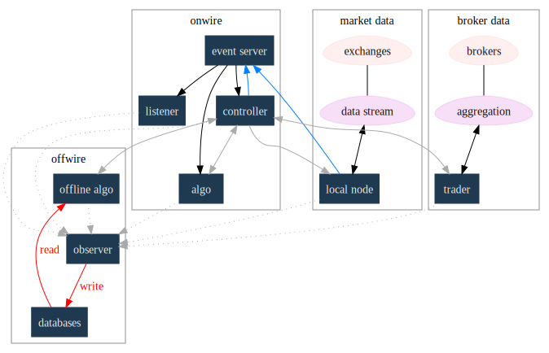

hyperq is an experiment in runtime design and, as such, there is a need for flexibility in the top-down design of the system. To achieve this, the overall design is first being modelled using graphviz. The current candidate system looks like this:
- blue boxes represent individual components of the system
- other colors represent external systems and data sources
- each edge of the chart represents a messaging sytem requirement
- there are two main one-way message passing routines that probably need to be very very fast (blue lines)
- there is one read from database and one write to database (red lines)
- every component registers to an observer component that records system state and dynamics (grey dotted).
The components have been grouped into several clusters:
- market data: representing trade data, order book and news information flowing from outside the sytem to a local data node.
- broker data: representing communication with trading mechanisms
- onwire: components that are "in the event stream". This is motivated by the specifications and documentation of the disruptor which argues that a single thread "wheel" is the best way to enable fast processing of market data into trading orders.
- offwire: this represents algorithms and processing that are not on the single-thread process. The motivation here is to test the hypothesis in the disruptor argument.
There are several ideas that are being tested:
- that the entire system should be the subject of search and optimisation, rather than componentry. One example of this is separation of complex event definitions from the statistical analysis once events are defined.
- there is a focus on automation and machine learning. As such there is no place for human interaction. In particular, no visualization is required.
- messaging between components can be the same general process. The components can also be tested in exactly the same way (such as speed and robustness testing)
And here's the dot code:
digraph G { node [label="\N"]; node [style=filled, color="#1f3950",fontcolor="#eeeeee",shape=box]; subgraph cluster_market_data { graph [label="market data", color="#909090"]; exchange [shape=egg,color="#ff111111",fontcolor="#101010",label="exchanges"]; aggregator [shape=egg,color="#cc11cc22",fontcolor="#101010",label="data stream"]; localport [label="local node"]; exchange -> aggregator [dir=none]; aggregator -> localport [dir=both]; } subgraph cluster_offwire { graph [label="offwire", color="#909090"]; offwirealgo [label="offline algo"]; observer; databases; observer -> databases [color=red,label="write",fontcolor=red]; } subgraph cluster_onwire { graph [label="onwire", color="#909090"]; node [style=filled]; disruptor [label="event server"]; eventalgo [label="algo"]; controller; controller -> eventalgo [color="#aaaaaa",dir=both] disruptor -> listener; disruptor -> eventalgo; disruptor -> controller; controller -> disruptor [color="#0080ff"]; } subgraph cluster_broker { graph [label="broker data", color="#909090"]; broker [shape=egg,color="#ff111111",fontcolor="#101010",label="brokers"]; brokeraggregator [shape=egg,color="#cc11cc22",fontcolor="#101010",label="aggregation"]; broker -> brokeraggregator [dir=none]; brokeraggregator -> trader [dir=both]; } localport -> observer [color="#aaaaaa",style=dotted]; controller -> localport [color="#aaaaaa"]; localport -> disruptor [color="#0080ff"]; listener -> observer [color="#aaaaaa",style=dotted]; controller -> observer [color="#aaaaaa",style=dotted]; controller -> trader [color="#aaaaaa",dir=both]; controller -> offwirealgo [color="#aaaaaa",dir=both]; databases -> offwirealgo [color=red,label="read",fontcolor=red]; trader -> observer [color="#aaaaaa",style=dotted]; eventalgo -> observer [color="#aaaaaa",style=dotted]; offwirealgo -> observer [color="#aaaaaa",style=dotted]; }